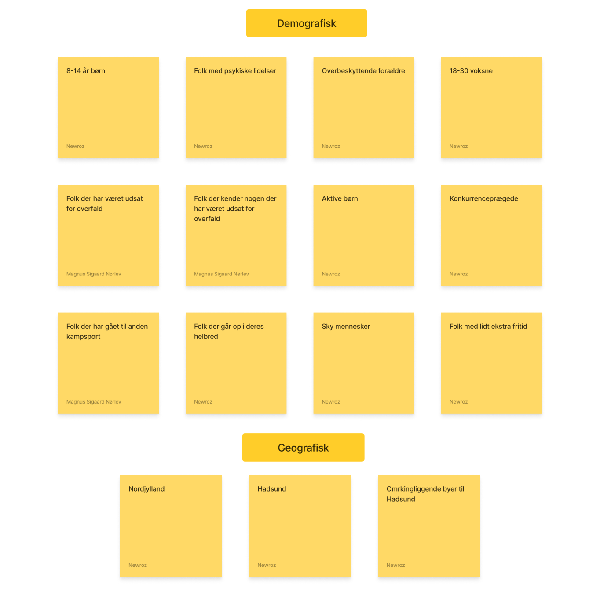
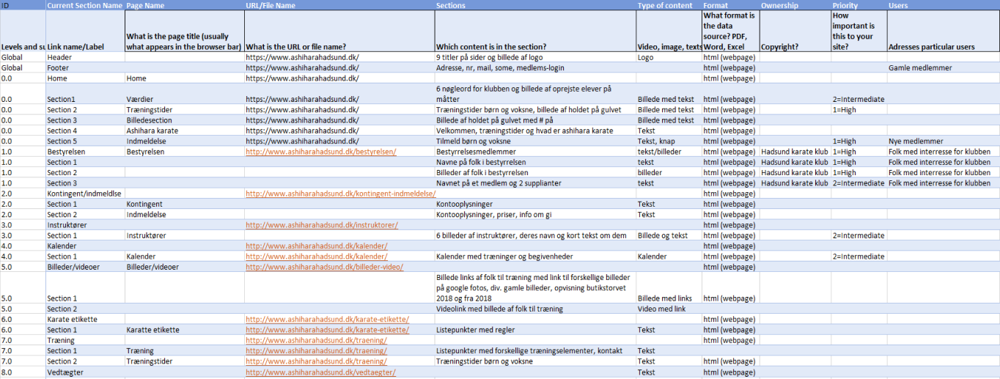
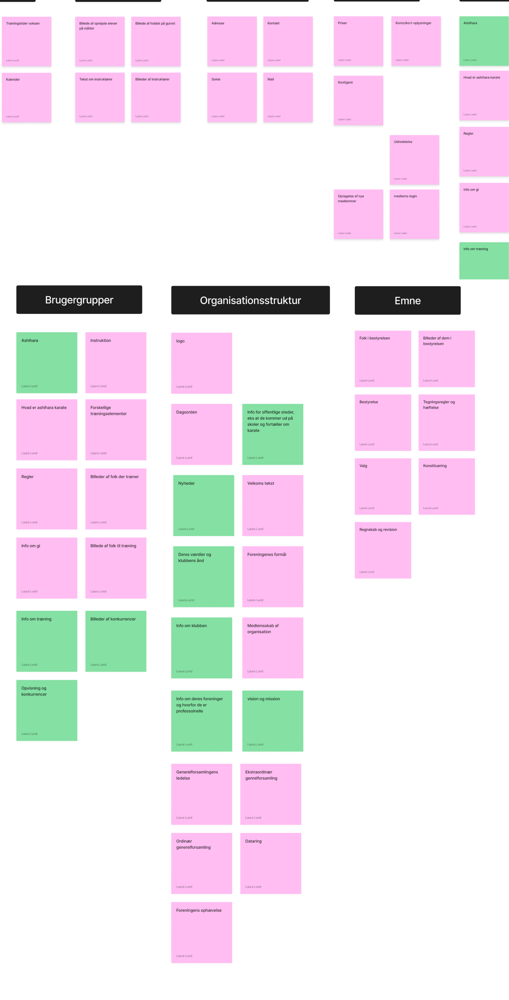
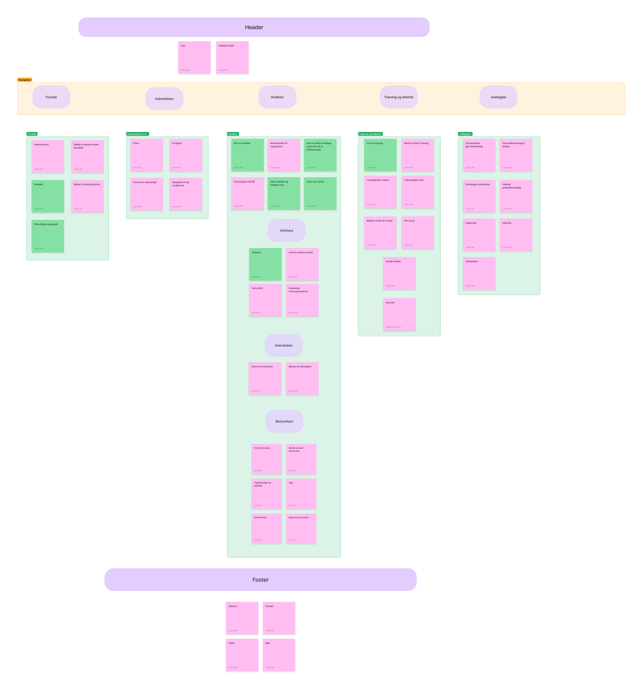
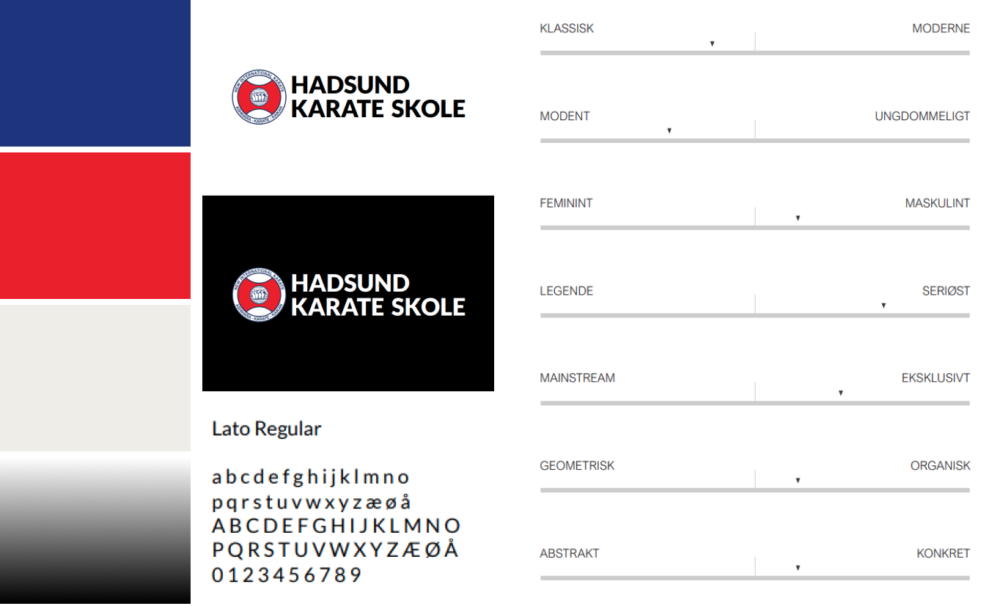
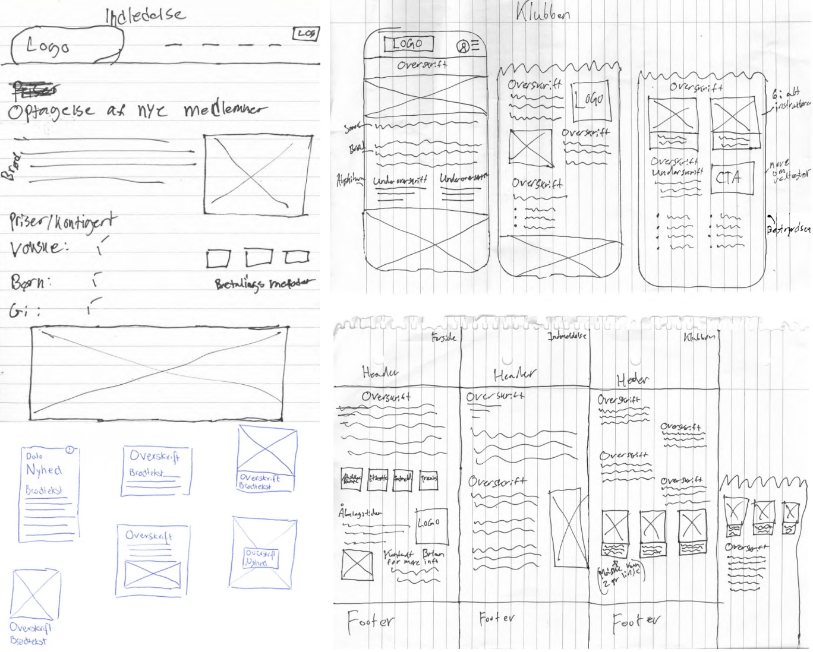
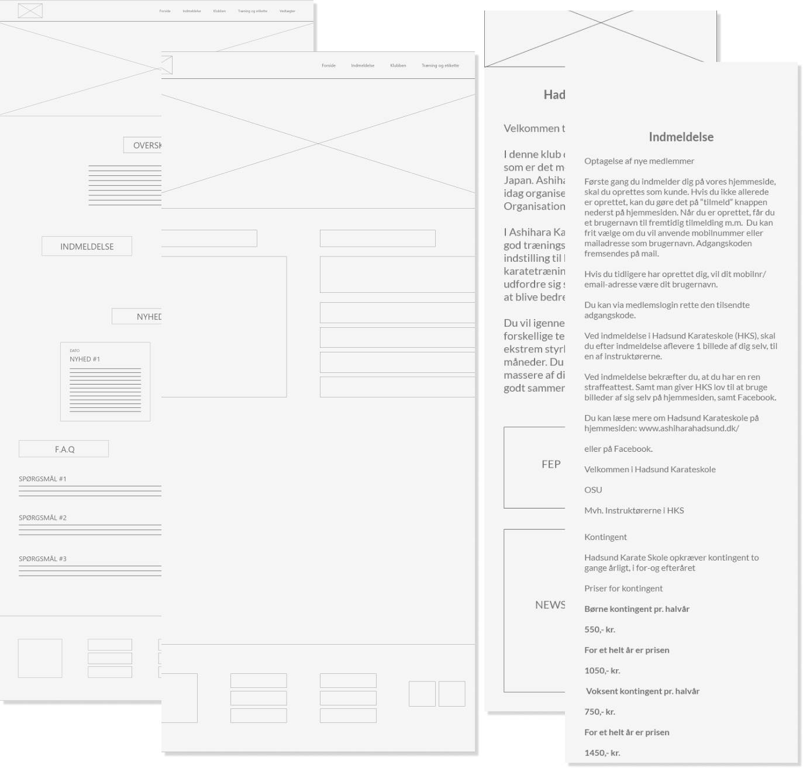
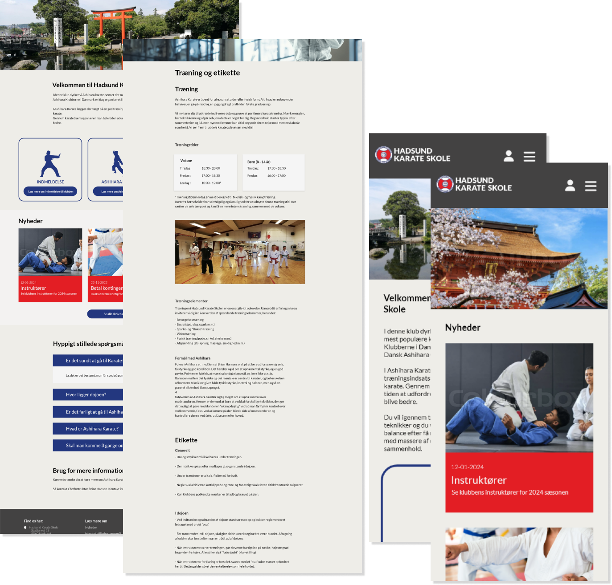
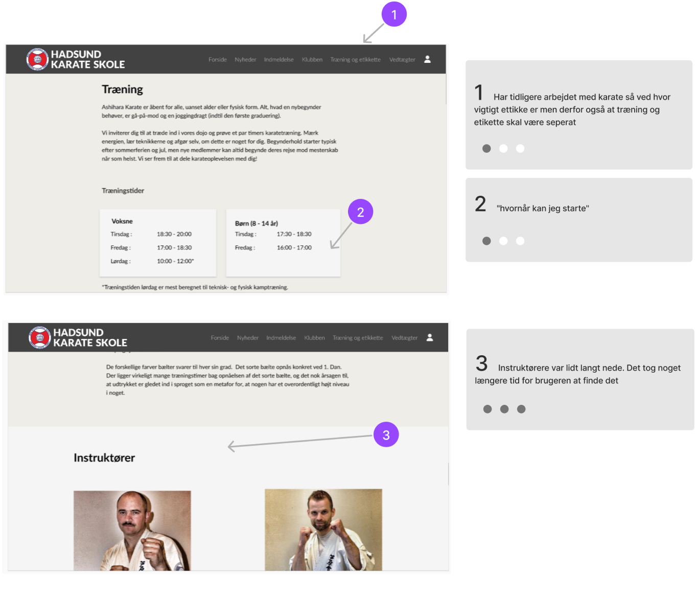

Vi startede projektet ved at undersøge præcis hvem Hadsund Karate Skole var, hvad de stod for og hvordan vi kunne bruge det til vores fordel når vi skulle designe deres hjemmeside
Kvantitativ research
Ud fra den information vi fik fra Hadsunds Karate skole kunne vi etablere og begrænse vores målgruppe ved hjælp af en simpel segmentering. Dette gjorde vi ved at finde fællestræk fra vores målgruppe og inddele dem i Demografisk og Geografisk

Kvalitativ research
Med hjælp fra vores segmentering kunne vi opstille en række af krav til et semi-struktureret interview. Dette gjorde vi ved at opstille en liste af spørgsmål i en interview guide med det overordnede emne "kampsport". Ved at interviewe personer fra vores målgruppe afgrænsning kunne vi analysere og samle en række af fælles temaer som brugerne tænkte på i relation til kampsport.
Fælles træk
- Mange af dem der udøvede kampsport tænkte meget på motion eller det at motionere, og brugte ofte kampsport som deres ugentlig form for motion
- De fleste der hører om kampsport eller karate beskriver det som en selvforsvarssport, eller en sport man tager til for at få mere selvtillid
- Der er mange forskellige former for kampsport men et træk de alle har tilfælles er at der er stort fokus på udvikling. Alle interview personer følte tit at de lærte mange nye ting og var glad for at kunne forbedre sig.
Struktur
Ud fra den information vi indsamlede fra vores brugere kunne vi bevæge os videre til at undersøge den eksisterende sides indhold. Derfor dannede vi os et overblik over Hadsund Karate Skole's indhold fra både deres hjemmeside med også deres sociale medier, ved hjælp af et content inventory.

Vi samlede det indhold vi skulle bruge overføre fra deres hjemmeside, samt det indhold vi ville tilføje og skabte et overblik over det ved at bruge et affinity diagram, og organisere det i kategorier.

Ved at organisere de kategorier fra vores affinity diagram kunne vi etablere et stabilt sitemap over den kommende hjemmeside

Hadsund Karate skole havde en række af krav og havde allerede etableret deres brand. Derfor skulle vi udarbejde et responsivt design ud fra de forskellige design krav som der var sat.

Low fidelity prototyper
For at kunne brainstorme designs og udvikle forskellige iterationer af vores design, lavede vi en række af skitser, som vi senere lavede til wireframes. I denne process tog vi højde for visuelt hierarki, layout og den generelle informationsstruktur


High-fidelity prototyper
Med en struktur på plads kunne vi sikkert overføjer vores billeder og resterende indhold, til en mock-up prototype. Denne protype ville havde mere fokus på readability, legibility, farver, kontrast, osv.

For at kunne gå videre til næste stadie af vores process var vi nødt til at undersøge om det design vi havde lavet ud fra vores krav, var ligeså godt som det var tænkt til at være. Derfor udførte vi en kort think aloud test på samme brugergruppe fra tidligere. Testen havde fokus på general navigation og om brugeren kunne finde det vigtigste information på siden. Resultaterne fra de udførte test blev opstillet og rangeret ved brug af usability reports, så vi kunne undersøge hvor og hvordan vi skulle lave ændringer til designet

Efter at have rettet efter i vores design ud fra vores testresultater, begyndte vi at udvikle vores produkt. Ved brug af ren HTML og CSS opbyggede vi siden gennem forskellige metoder. For at kunne vedligeholde ønsket om at hjemmesiden var responsiv gjorde vi brug af media queries, samt grids og flex-box til at understøtte og nemt justere vores layout.
Med produktets udførsel har vi produceret en funktionel og responsiv hjemmeside der stemmer overens med brugernes krav til informative og visuelle behov samt vores krav til visuelt hierarki og informationsarkitektur.
Vi havde meget fokus på det visuelle og at sørge for at det hele stemte overens når de ende skulle blive responsiv. Der er steder hvor vi stadig kunne blive ved med at udvikle og fin justere designet, men den endelige version opfylder alle krav.